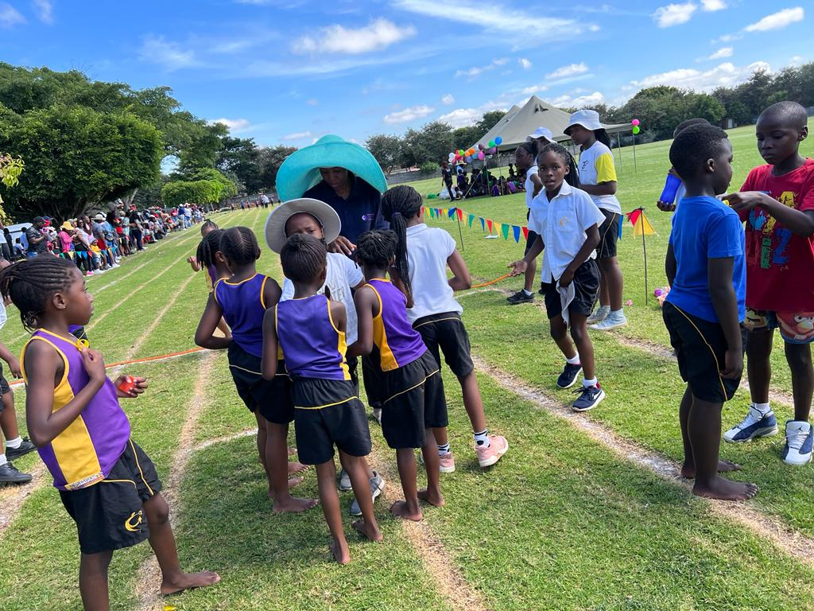
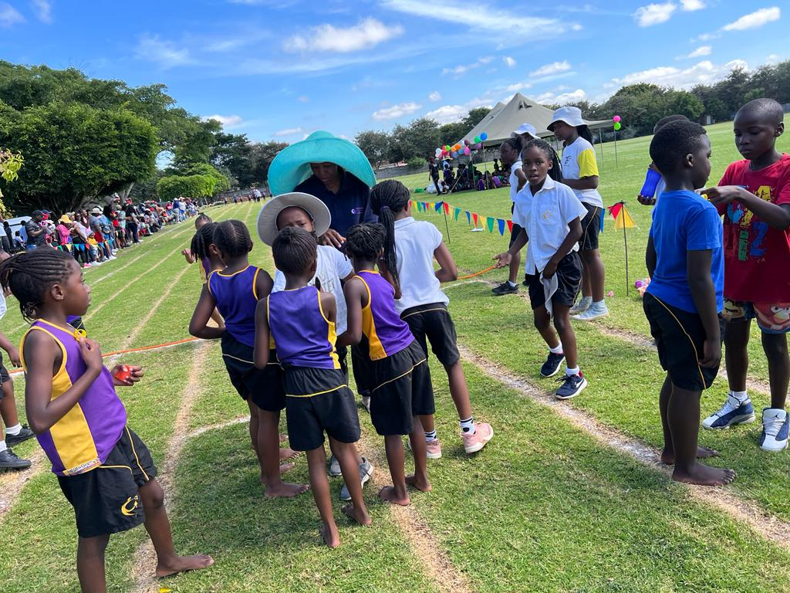

Celebration International School (CIS) provides a learning culture that facilitates development of learners’ attitudes, beliefs and skills needed for success. Leaners are challenged with tasks that involve developing effective communication skills: oral, written, and digital. We prepare students to be life-long learners with strong character using the Bob Jones University (BJU) curriculum.
Is a curriculum built around the Christian worldview. Its core values are based on biblical teachings. The curriculum is based on providing children with reading materials that enable critical thinking and practical learning. It has courses for children in K3 up to the 12th-grade level. Subjects offered are Math, English, Science, Heritage Studies, Reading, Spelling, Shona, Music, Physical Education and Bible.
Bob Jones Curriculum has brought technology into classrooms which has had a positive impact on the quality of education delivered. The students use eBooks which ensure that learners are proactively interacting with the learning material by way of videos, animations, augmented reality, changing displays, and taking notes.
We believe education should be shaped according to the lens of Scripture. A complete education goes beyond facts and processes, so our textbooks and eBooks direct students to think for themselves. We teach learners to live life with a Godly purpose and thus set and pursue goals that thrust them towards their God-given purpose.
Every athlete exercises self-control in all things. They do it to receive a perishable wreath, but we an imperishable. (1 Corinthians 9:25)
Celebration International School prepares children for good sportsmanship and fair play on and off the sports field. We conduct physical education classes, skills coaching, and team building in many sports. Every child from K5 to Grade 6 is taught to swim, with water safety being paramount.
Athletics, Cross-Country, Soccer, Netball, Cricket, Hockey, Basketball, and Swimming
On any day, the playing fields are abuzz with children eagerly involved in practicing or inter-school matches in one of their scheduled afternoon sports sessions.
Our aim is to encourage participation in all sports by all our children. It is our belief that involvement outside the classroom is very important in the overall development of individuals and facilitates the growth of an improved sense of self in each participant. We also recognize that sport plays an important role in the development of both physique and character.
 

Extra options are on offer one afternoon a week. These are taken by specialists from outside the school with the help of our teaching staff. Each pupil may select one or two activities which they enjoy. Activities on offer include: Art, gymnastics, robotics, board games, life skills, drums, guitar, keyboard, recorder, and music.
| GRADE 7 | GRADE 8 | GRADE 9 | GRADE 10 | GRADE 11 | GRADE 12 | IGCSE | AS & A LEVEL |
|---|---|---|---|---|---|---|---|
| Fundamental Math | Pre Algebra | Algebra 1 | Bible Truths | Algebra 2 | American Govt | Mathematics | Geography |
| Christianomics | Christianomics | Bible Truths | Biology | American Literature | Bible Truths | English | History |
| English Language & Literature | English Language & Literature | Cultural Geography | Elements of Literature | Bible Truths | British Literature | Physics | Travel & Tourism |
| Life Science | Earth Science | Fundamentals of Literature | Geometry | Chemistry | Economics | Biology | Accounts |
| Bible | Bible | Physical Science | World History | US History | Physics | Literature in English | Business Studies |
| French | French | Health | Writing grammar and vocabulary | Writing grammar and vocabulary | Precalculus | Chemistry | Divinity |
| Music | Music | Music | Art | Consumer Math | Writing grammar and vocabulary | Geography | |
| History | History | French | Music | Art | Business Math | Accounts | |
| Art | Music | ||||||
| Writing, grammar, vocabulary and spelling | |||||||
| Religious Education | |||||||
| Music | |||||||
| Art | |||||||
| French | |||||||
| History | |||||||
| Combined Science |
Celebration International School endeavours to produce academically virtuous young men and women, who are physically strong, principled individuals who will be in the lead and add value in whatever society or community they discover themselves in, be it in Zimbabwe or abroad. The comprehensive spectrum of activities presented at Celebration International School has been precisely curated to meet the needs of young men and women at all levels. Every learner is encouraged not to do what he enjoys only but to attempt new things and in so doing determine his or her purpose.
From our Inter house Athletics in the direction of District Athletics, we inspire all pupils to partake and have fun with our school Athletics.
All pupils are encouraged to take part in Inter–school Cross Country activities, and we attend invitationals throughout the year.
Hockey is offered in the 2nd and 3rd Terms to all our girls. Our students participate in inter-school fixtures and contests.
We attend all inter-school events and tournaments throughout the season. Our girls train for basketball during the 2nd and 3rd term.
Volleyball is played by girls in the 2nd and 3rd term.